「アバターアワード」は、独創的な進化を続けるアバター文化の振興とクリエイターの社会的認知度向上を目的として、一般より広く3Dアバター作品を募集し、優れた作品を表彰するアワードです。
第3回目の審査員には、「ViVi」などの雑誌を手がけてきたファッション・クリエイティブ・ディレクターの軍地彩弓氏、アニメ「ようこそ実力至上主義の教室へ」や「ご注文はうさぎですか？」の監督を務めた橋本裕之氏、「ケロロ軍曹」の作者や「けものフレンズ」のコンセプトデザイナーとして広く知られる吉崎観音氏、電撃文庫「ソードアート・オンライン（SAO）」などの編集者として知られる三木一馬氏が参画しました。
エントリー期間中（2022年10月日～11月20日）に投稿された作品総数は各部門合わせて200点を超え、そのうちアバター部門に最終ノミネートとして選出された11作品が、2022年12月22日（木）の「アバターアワード2022授賞式」生放送のバーチャルランウェイにてパフォーマンスを行いました。
審査員の間では、キャラクター性・ファッション性・先進性やアバターにおける自由についてなど、様々な観点で議論が交わされました。
また、アバター文化を一般にも広く知らしめ、その発展に最も貢献したアバターを表彰する「アバターアワード特別功労賞」には、VTuber「バーチャル美少女ねむ」が選出されました。同賞の受賞は2020年のVTuber「キズナアイ」の受賞に続く、２人目の表彰となります。全世界のメタバースユーザー1,200名を分析した大規模調査「ソーシャルVR国勢調査」、著書である世界初の仮想世界のルポルタージュ『メタバース進化論（技術評論社）』など、様々な活動によるアバター文化の振興と貢献を評価し、選出しました。
第3回「アバターアワード2022」アバターアワード2022特設展示室
「アバターアワード2022」最終審査にノミネートされた11体を期間限定でVRSNS「バーチャルキャスト」で展示しています。
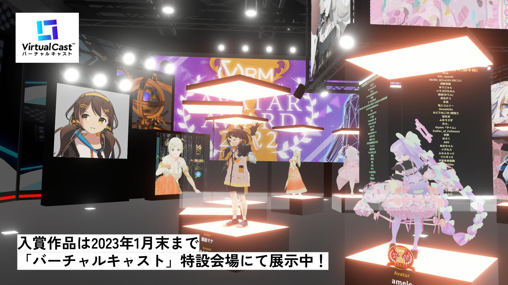
第3回「アバターアワード2022」審査員
軍地 彩弓 様
編集者/ファッション・クリエイティブ・ディレクター
三木 一馬 様
（株）ストレートエッジ 代表

吉崎 観音 様
漫画家
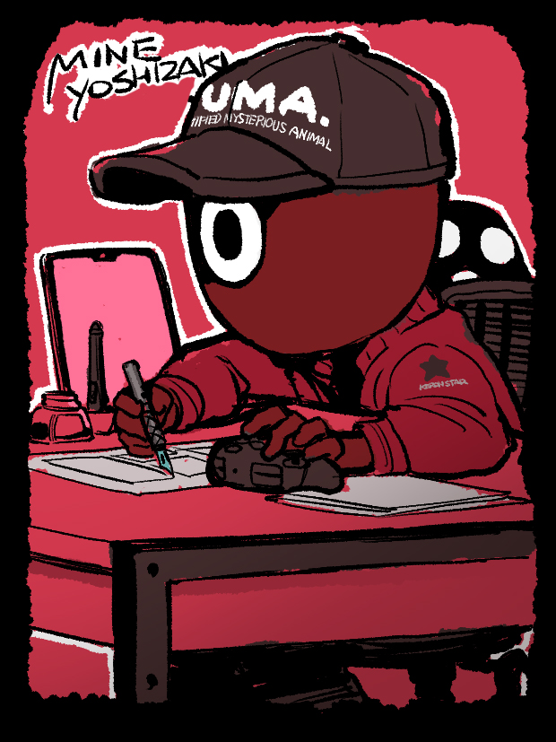
橋本 裕之 様
アニメーション監督・演出

司会：吉田 尚記 様
（ニッポン放送アナウンサー）
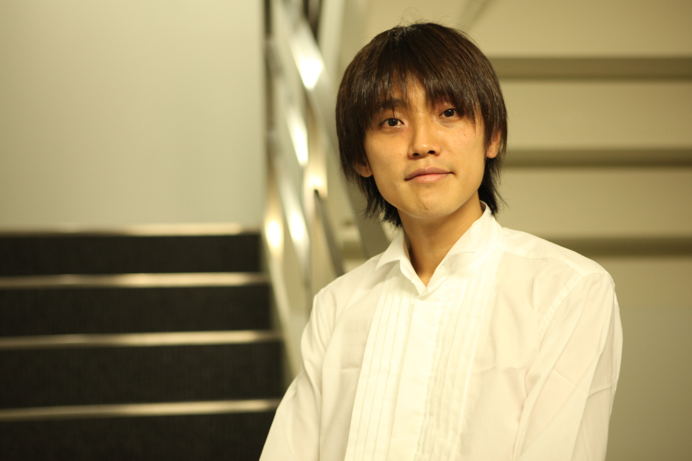
第3回「アバターアワード2022」受賞結果一覧
■最優秀賞
・「amele」（投稿者：大幸 太一氏）

 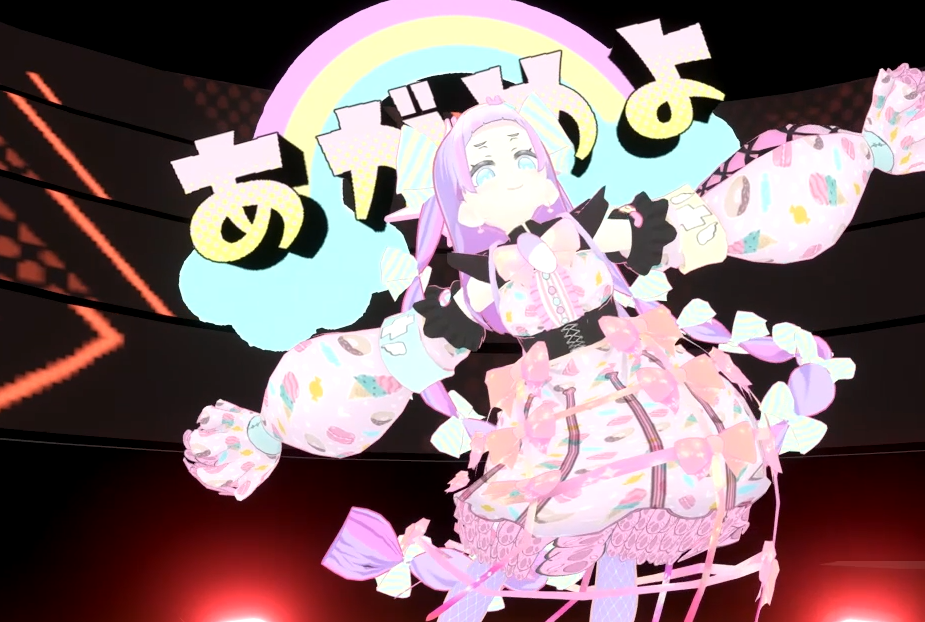
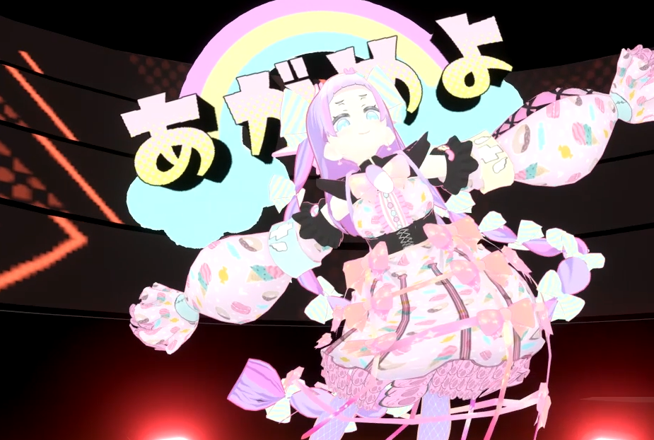
【審査員コメント】
ポップさとキュートさ、東京KAWAIIを体現している。後ろのリュックのネコなど、ウィットに富んでいるところも素晴らしいです。（軍地）
動き出すとすぐに、見どころと楽しさが溢れるキャラクターであることが伝わってきました。（吉崎）
動きのない画像のみでの書類審査では、あまり評価していなかったのですが、ランウェイでの動きによって血が通ったような生き生きとした印象になりました。服装の揺れ動く流れもゴージャスで良かったです。（三木）
■優秀賞
・「REIRO12th 魔態遍照」（投稿者：REIRO_MCno151 VBC CLI氏）
 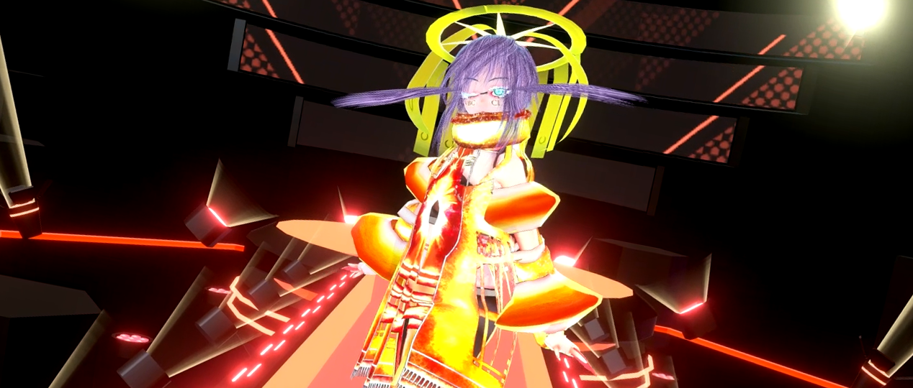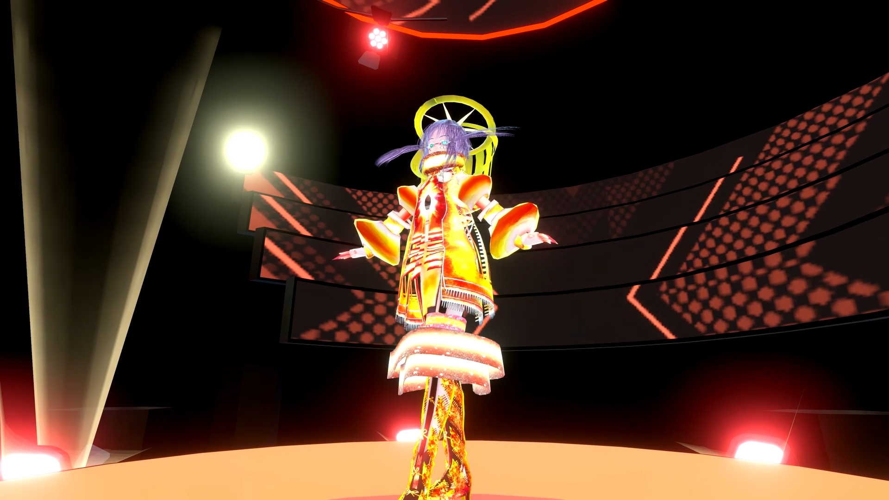
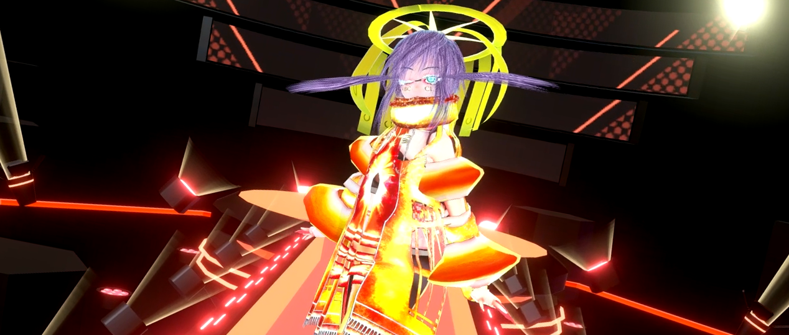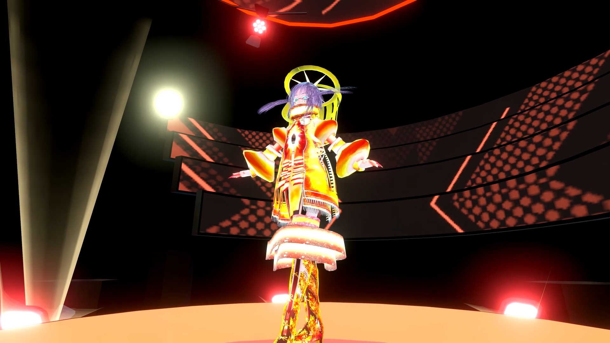
【審査員コメント】
物理的なデザインではあり得ない空中に浮かぶようなデザインはアバターのファッションならではだと思いました。髪型、ブーツに至るまで描き込まれた不思議な個性を感じます。(軍地)
・「Lilith」（投稿者：Yencho氏）
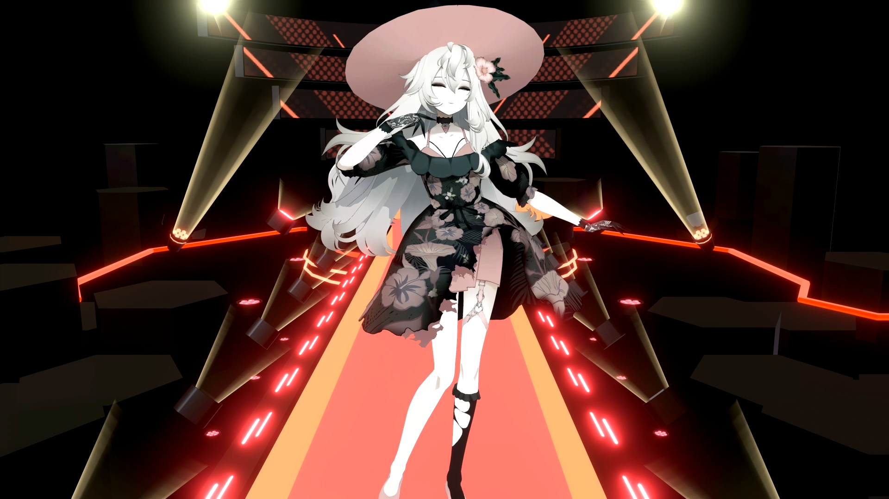

【審査員コメント】
各所抑えた表現が、2D・3Dの境界を感じさせない効果を作り出していて目を奪われてしまいます。一歩進んだ表現を感じました。（吉崎）
服の柄が本当に綺麗。色んな物がミックスされていてキャラクターのミステリアスさとマッチしてる気がします。（橋本）
・「音無むおん Cyber Punkモード」（投稿者：バーチャルしろくま氏）

 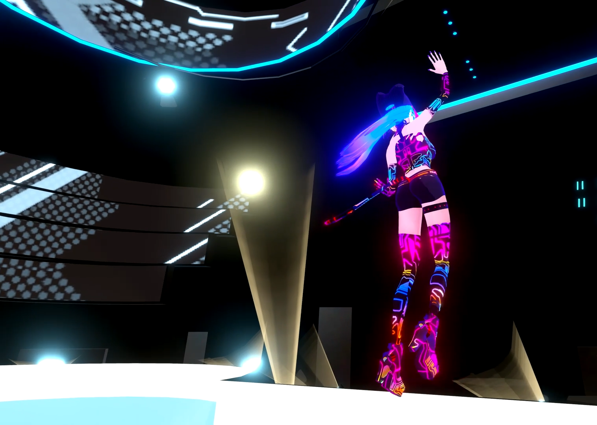
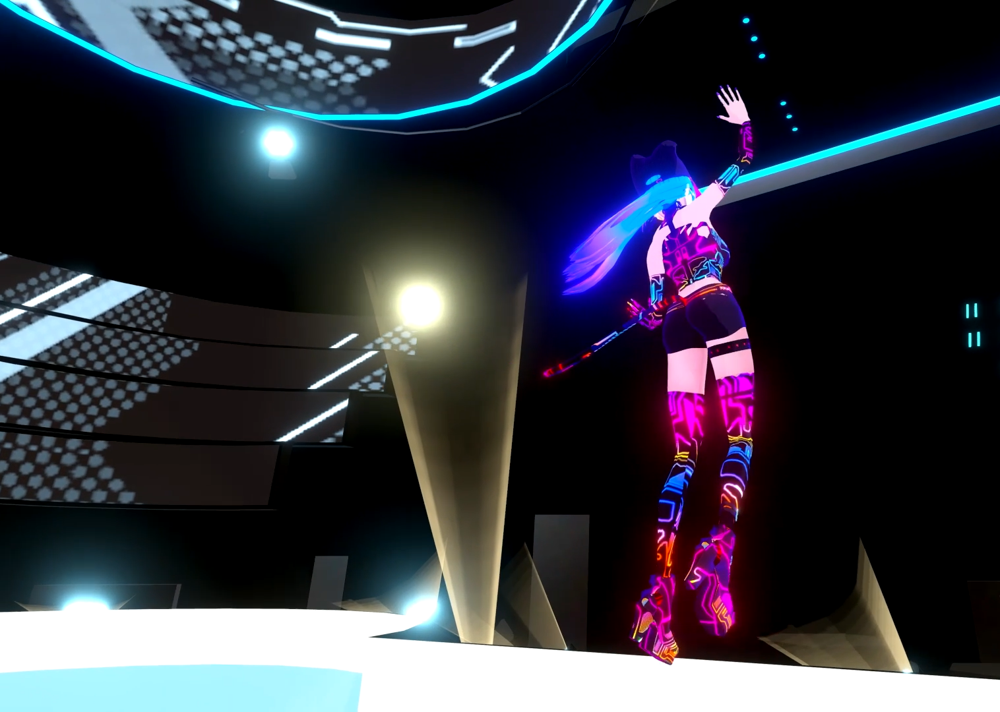
【審査員コメント】
色使いがかっこいい！帽子まで動いているのが細かい。よく見ると靴底にまでラインが入っている！（橋本）
まさに近未来なテクノロジーを彷彿とさせるコンセプチュアルなかっこいいアバターで、動きもまさにそのかっこよさが体現されていて良かったです。帽子の猫耳や、尻尾のアクセントも特徴的でいいと思いました。（三木）
■最終ノミネート作品一覧
- 「栗絵マナ」（投稿者：佐久間蒼乃氏）
- 「グラキエース」（投稿者：thyme氏）
- 「UAJ-06」（投稿者：ﾓｫｽﾞ店長氏）
- 「VKILL 姫君の装い」（投稿者： HINAMIE氏）
- 「とうろう蘭子」（投稿者：フィヤン子氏）
- 「猫森ハクア」（投稿者：伽羅メルク氏）
- 「甘野氷」（投稿者：甘野氷氏、制作協力：Luy氏）
■主催者特別功労賞
「バーチャル美少女ねむ」
「アバターアワード2022特別功労賞」は、アバター文化の一般への認知度向上や文化推進に最も貢献した人に贈られる賞です。初代受賞のキズナアイさんに続き、今回はバーチャル美少女ねむ氏が選出されました。
バーチャル美少女ねむ氏は2022年春に書籍「メタバース進化論」を出版し、自分自身の体験や数多くのユーザーへのインタビュー、そして全世界のユーザー1,200名を分析した大規模調査「ソーシャルVR国勢調査」を元にメタバースのリアルを明らかにしました。世界初の「仮想世界のルポルタージュ」を通して、アバター文化について広く詳しく紹介した功績を称え、表彰されました。
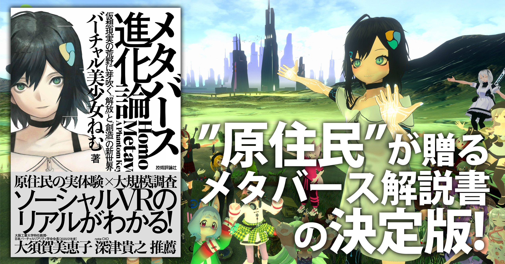 【本人受賞コメント】
「このたびはアバターアワード特別功労賞を頂き、とても嬉しいです！ 本当にありがとうございます！ 私は「バーチャルでなりたい自分になる」というビジョンを実現するため、ブームになる前から個人でVTuber活動をしてきました。メタバースで生きる住人の文化を現地調査して本を出版したり、様々なメディアでアバターがもたらす人類の新たな進化の可能性を発信してきました。今はまだ私達一部のアーリーアダプターが生活している状況に過ぎないですが、いずれメタバースが一般化すると「誰もが自由に簡単に、アバターの姿を纏って、なりたい自分として生きていく」ために、VRMは最も重要な技術になると考えています。これからもバーチャル文化の最先端に挑戦して、たくさんの可能性を届けていきたいと思います。このたびは本当にありがとうございました！」
初のアバターライフ部門の受賞者はdamakoko氏
アバター同士の交流やアバターならではの活動が伝わる最高のショットを評価する新設の「アバターライフ部門」。応募作品40点の中から選ばれた栄えある初代受賞は「焚火を囲んでみんな野生に返るひと時」（投稿者：damakoko氏）です。
XR kaigi 2022で最終ノミネート作品のランウェイウォークをお披露目！
2022年12月22日（木）・23日（金）の2日間にわたって開催された
国内最大級のXR/メタバースカンファレンス「XR kaigi 2022」の
VRMコンソーシアムブースで、
ソニーの空間再現ディスプレイ（Spatial Reality Display）『ELF-SR1』を使って
入賞作品のランウェイ動画を展示しました。
来場者は、メガネやヘッドセットなどを使わずに、裸眼でアバターを全方位から鑑賞することができます。
第３回「アバターアワード2022」 開催概要
■主催 ：一般社団法人VRMコンソーシアム
■実行委員長：大前広樹 (一般社団法人VRMコンソーシアム 理事 渉外委員会委員長 /
ユニティ・テクノロジーズ・ジャパン 日本代表ディレクター)
■応募期間 ：2022年10月24日（月）～11月20日（日）
■授賞式 ：2022年12月22日（木）20:00～
YouTube：https://www.youtube.com/watch?v=TpIfaCEvgLU
ニコニコ生放送：https://live.nicovideo.jp/watch/lv339255216
ＶＲＭコンソーシアムについて
3Dアバター向けファイルフォーマット「VRM」の策定・普及を目的とした一般社団法人です。詳細につきましては以下のサイトをご覧ください。
ＶＲＭとは？
VR時代の3Dキャラクター・アバター使用を想定したプラットフォーム非依存のファイル形式です。
従来の3Dモデルとしてのテクスチャやボーンといった情報に加え、視線設定など一人称で操作するアバターに必要な情報を扱えるようにし、環境により異なるスケールや座標系などを統一することで、3Dアバターが配信・ゲームなどあらゆるプラットフォームで使用されることを想定しています。
また、人が操作して人格を演じるアバターの特性を考慮して、このアバターを他人が使用しても良いか、暴力表現をしても良いか、などアバター特有の権利までもファイルに埋め込むことが可能です。
将来的には3Dモデルの権利保護の機能を兼ね備え、アイテムやアバターの着せ替え販売を実現するなど3Dモデルが流通する際の標準フォーマットを目指していきます。
ＶＲＭの技術仕様につきましては以下のドキュメントをご覧ください。
アバターアワードアーカイブ
アバターアワードは2020年に創設されました。
これまでの受賞作品やコメントについてはこちらからぜひご覧ください！